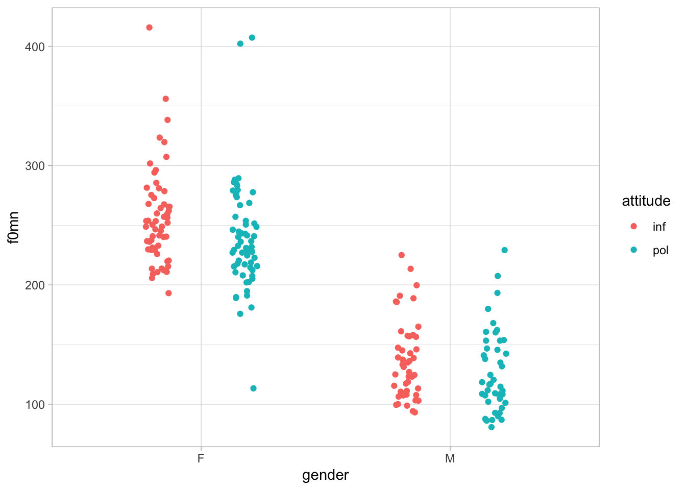
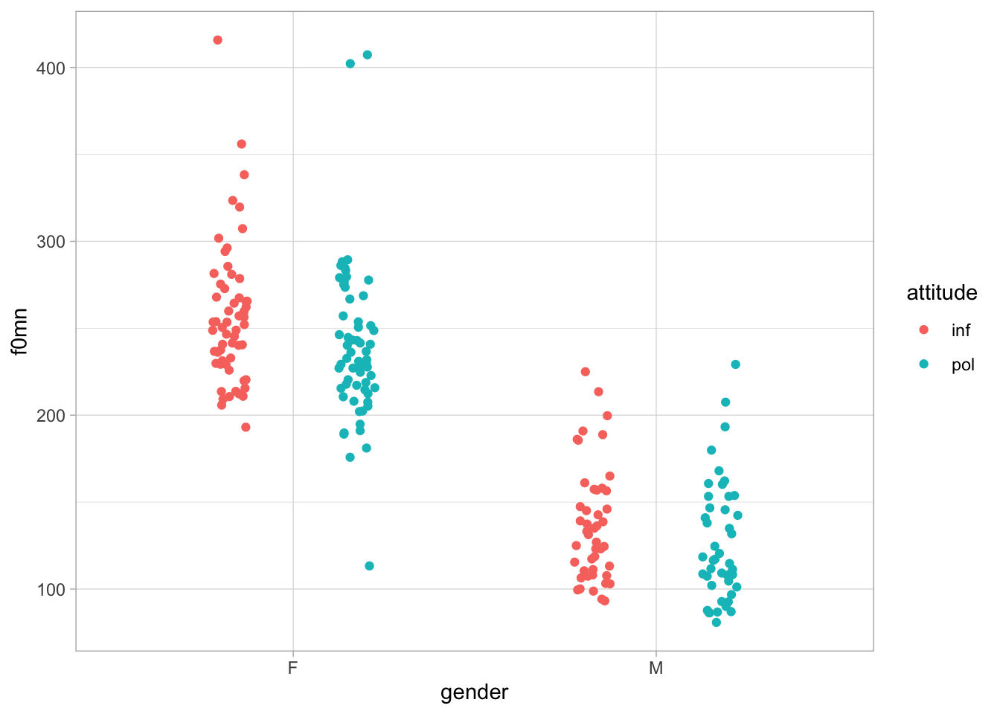

polite %>%
ggplot(aes(gender, f0mn, colour = attitude)) +
geom_jitter(position = position_jitterdodge(jitter.width = 0.1, dodge.width = 0.7))
The polite data also has information on the gender of the participant (F for female and M for male).
Let’s plot again f0mn and attitude (register), this time including gender.
polite %>%
ggplot(aes(gender, f0mn, colour = attitude)) +
geom_jitter(position = position_jitterdodge(jitter.width = 0.1, dodge.width = 0.7))
The plot suggests that f0mn might be somewhat lower in the polite register in female participants, but not really in male participants.
How do we account for this potential interaction between register and gender?
When there is the potential for two or more predictors in a model to “interact” with each other, you should include a so-called interaction.
Here’s how:
In the model’s formula we have attitude, gender and something new: attitude:gender.
The term attitude:gender is an interaction: it tells the model to allow attitude and gender to interact, so that if the effect of one predictor differs depending on the effect of the other, the model will be able to capture this.
In other words, if the effect of attitude differs by gender, we need to include an interaction in the model to capture this. You normally always include interactions between predictors and the results of the interaction term will help you understand if there is an interaction or not.
Now, this is the model summary.
Family: gaussian
Links: mu = identity; sigma = identity
Formula: f0mn ~ attitude + gender + attitude:gender
Data: polite (Number of observations: 212)
Draws: 4 chains, each with iter = 2000; warmup = 1000; thin = 1;
total post-warmup draws = 4000
Population-Level Effects:
Estimate Est.Error l-95% CI u-95% CI Rhat Bulk_ESS Tail_ESS
Intercept 256.72 5.05 246.93 266.64 1.00 2684 2783
attitudepol -17.56 7.08 -31.21 -3.72 1.00 2482 2834
genderM -119.61 7.64 -134.92 -104.68 1.00 2170 2544
attitudepol:genderM 6.70 10.66 -13.83 26.99 1.00 1989 2731
Family Specific Parameters:
Estimate Est.Error l-95% CI u-95% CI Rhat Bulk_ESS Tail_ESS
sigma 39.11 1.97 35.49 43.19 1.00 3837 2599
Draws were sampled using sample(hmc). For each parameter, Bulk_ESS
and Tail_ESS are effective sample size measures, and Rhat is the potential
scale reduction factor on split chains (at convergence, Rhat = 1).Let’s go through the population-level effects:
Intercept: this is the mean f0mn when [attitude=informal] and [gender=F]. There is a 95% probability that this is between 247 and 266 hz.
attitudepol: this is the difference in mean f0mn when you go from the Intercept to [attitude=polite] (so [gender=F]). We can be 95% confident that this difference is between -31 and -4 hz. In other words, when the register is polite, f0mean lowers by 4-31 hz in female participants at 95% probability.
genderM: this is the difference in mean f0mn when you go from the Intercept to [gender=M] (so [attitude=inf]). There is a 95% probability that this difference is between -135 and -105 hz.
Now, the interaction term attitudepol:genderM: this tells you the adjustment you need to make to the effect of attitudepol to get the effect when [gender=M].
What does it mean? It means that, on average, the effect of attitude is 6.7 hz smaller in males than in females: -17.56 + 6.7 = -10.86. However, there is also the possibility that the effect is 0 or that it is positive rather than negative, because the 95% CrI go from -14 to +27 hz.
We can visualise the results using the conditional_effects() function.
The effect of attitude is clearer in female participants than in males, although it is still possible that male participants lower their mean f0 when speaking politely.
We can understand what the interaction term is doing through the formula of the model we fitted above. Feel free to skip this part if you find that formulae don’t help you.
\[ \begin{aligned} f0mn & \sim Gaussian(\mu, \sigma) \\ \\ \mu & \sim \beta_0 + \beta_1 \times attitude_{pol} + \beta_2 \times gender_{M} + \beta_3 \times attitude_{pol} \times gender_{M} \\ \sigma & \sim Gaussian_+(39, 1.97) \end{aligned} \]
When the [attitude=polite], \(attitude_{pol}\) is 1 and when [gender=M], \(gender_M\) is 1, otherwise they are 0.
Now, if you want to get \(\mu\) (i.e. the mean f0mn) for a particular register/gender, you just fill in the estimates from the model summary:
Intercept.attitudepol.genderM.attitudepol:genderMLet me show you the process for the mean f0mn in the polite register and female participant.
\[
\begin{aligned}
\mu_{[polite, F]} = & \beta_0 + \beta_1 \times attitude_{pol} + \beta_2 \times gender_{M} + \beta_3 \times attitude_{pol} \times gender_{M} \\
= & 256.72 + (-17.56) \times 1 + (-119.61) \times 0 + 6.7 \times 1 \times 0 \\
= & 256.72 + (-17.56) \times 1 \\
= & 239.16
\end{aligned}
\] So, the mean f0mn when the register is polite and the gender is female is about 239 hz.
Try and figure out the mean f0mn for the other combinations of register and gender.
If you feel like and you have the time, try running the model again but this time use musicstudent (whether the participant studied music or not) and months_ger (how many months the participant have spent in Germany).
Remember to include an interaction between the two predictors. A short cut is to write musicstudent * months_ger instead of the longer musicstudent + months_ger + musicstudent:months_ger.